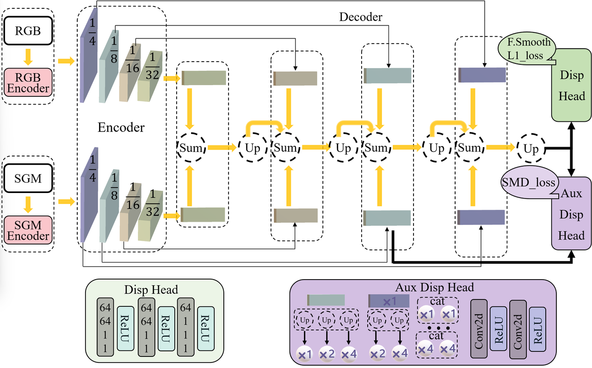

核心组件
- 双路编码器（RGB 和 SGM）设计
- 多尺度特征解码器架构
- 创新的双头视差预测机制
- 高效的特征融合策略

单目视差估计网络的高效架构与性能优化 了解更多
左图：Baseline 视差估计效果 | 右图：新模型视差估计效果
左图：Baseline 视差(点云)估计效果 | 右图：新模型视差(点云)估计效果
[1] Tosi, F., Liao, Y., Schmitt, C., & Geiger, A. (2021). SMD-Nets: Stereo Mixture Density Networks. In Proceedings of the IEEE/CVF Conference on Computer Vision and Pattern Recognition (pp. 8942-8952).
[2] Mayer, N., Ilg, E., Hausser, P., Fischer, P., Cremers, D., Dosovitskiy, A., & Brox, T. (2016). A large dataset to train convolutional networks for disparity, optical flow, and scene flow estimation. In Proceedings of the IEEE conference on computer vision and pattern recognition (pp. 4040-4048).